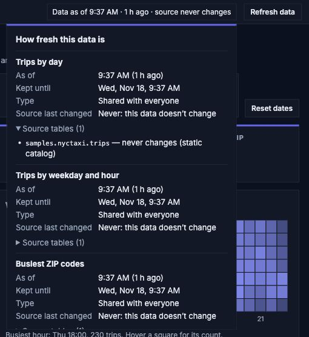
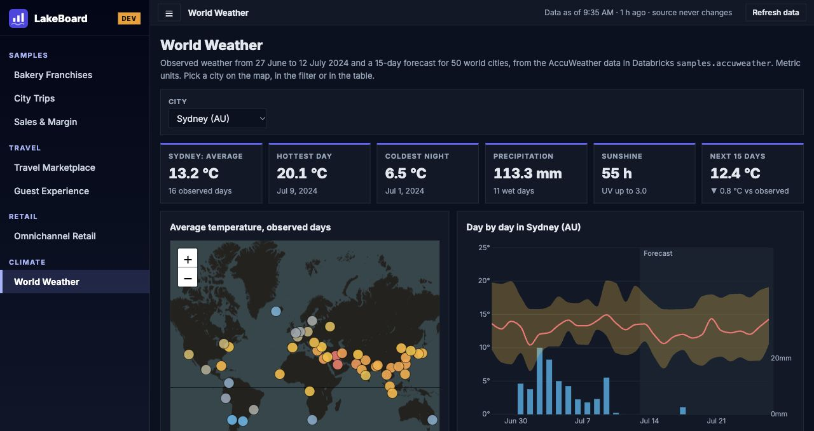
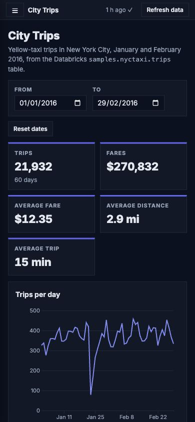

Freshness, made visible
How fresh is this data?
Inspect when results were captured, how long they’re kept, their sharing scope and the source tables behind them.


Inspect the details ↗Open-source · Built on Databricks
Your coding agent. Your dashboard design.
A shared home on your lakehouse.
Create dashboard folders with Claude Code, Codex, Cursor or your preferred agent. LakeBoard brings them together in one Databricks App per environment.



The reason it exists
We needed the next Fabric capacity tier. It was expensive. I started looking for another way to deliver the reports I used to build in Power BI.
Doneel · LakeBoard creator & data team practitioner
One app per report would create its own overhead. So I built a shared framework: many dashboard folders, one app per environment.
The shift
Independent dashboard folders.
Shared navigation, components and hosting.
Explore the framework
Seven actual dashboard captures.
Pick a view. Open it to look closer.
Enlarge capture
Explore New York taxi trips through date filters, daily trends and an hourly heatmap.
Screenshots show example datasets. This gallery is a product tour; it does not query a live warehouse.
The details that make it usable
Inspect when results were captured, how long they’re kept, their sharing scope and the source tables behind them.

Inspect the details ↗Responsive layouts keep filters, tiles and charts usable on a phone.
Actual mobile browser capture.

Build with the agent you choose
A dashboard is a folder in Git.
The framework supplies the common parts.
Describe the dashboard. Let your agent help build it. Review the code and the numbers before it reaches users.
Shared instructions give Claude Code, Codex, Cursor and other coding agents the same authoring rules. Your team keeps the design choices and the review.
src / dashboards / your-dashboard /
Its title, owner, filters, query parameters and navigation belong in a reviewable configuration file.
From Power BI to the lakehouse
The migration pattern behind the pilot. Semantic definitions need review and reconciliation; this is not an automatic Power BI converter.
Reviewed metrics can serve both dashboards and curated agents.
Databricks Genie One MCP can help authors find data, understand definitions and develop SQL. Business users can collaborate with a coding agent too.
Viewer-authorized queries and per-viewer caching are the default. Unity Catalog policies govern data access; shared or app access requires deliberate configuration.
Optional Ask Genie uses curated Genie Agents with user authorization. This runtime experience is separate from Genie One MCP used during authoring.
Built from a real reporting problem
Open source / Apache 2.0Explore the code, inspect a dashboard folder,
and make the framework your own.
git clone https://github.com/DoneelM/LakeBoard.git